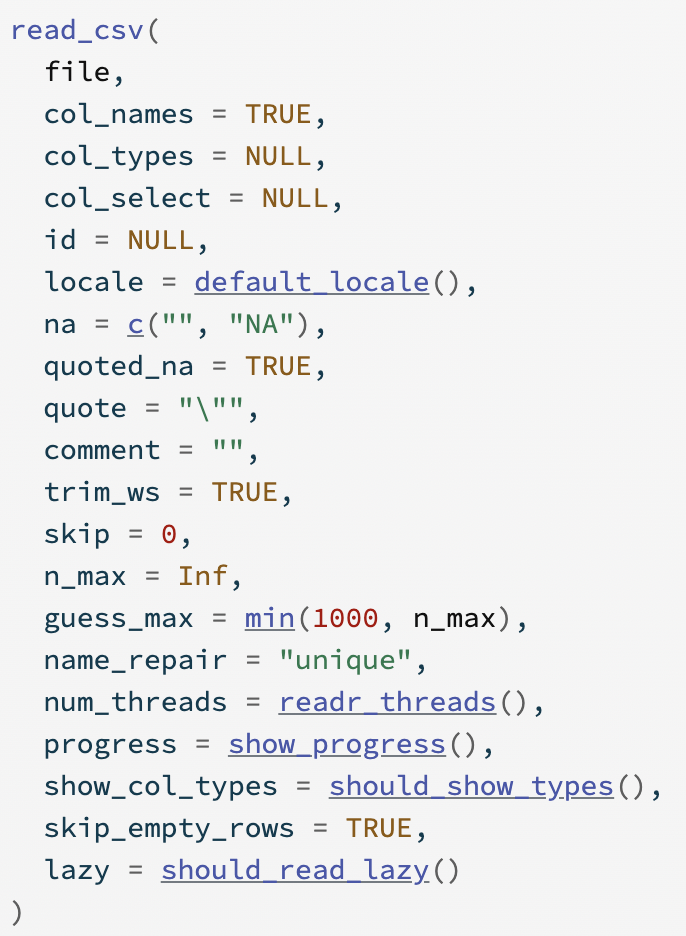

Importing Data and Graphics with ggplot2
Tidy Data

Artwork by Allison Horst
Common Types of Data Files


Take a look at the documentation


Aesthetics
We map variables (columns) from the data to aesthetics on the graphic useing the aes() function.
What aesthetics can we set (see ggplot2 cheat sheet for more)?
- x, y
- color, fill
- linetype
- lineend
- size
- shape


Statistical Transformation: stat


Position Adjustements

PA 2: Using Data Visualization to Find the Penguins

Artwork by Allison Horst